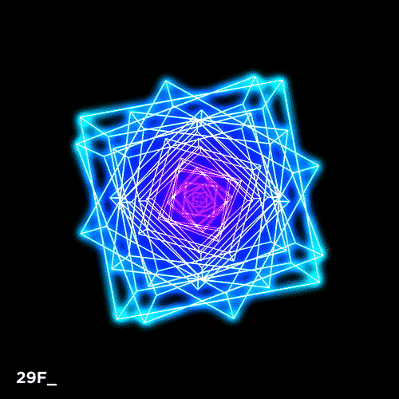
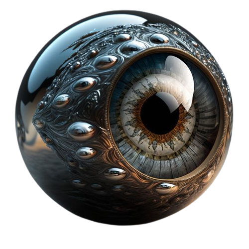
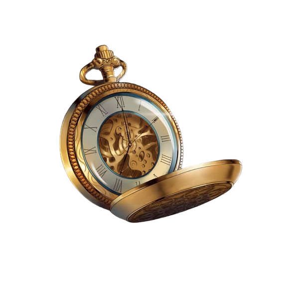
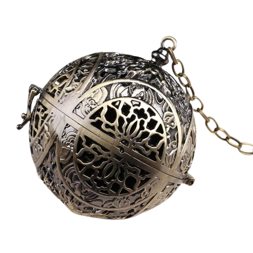
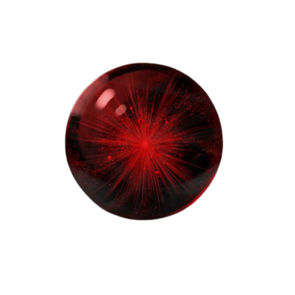
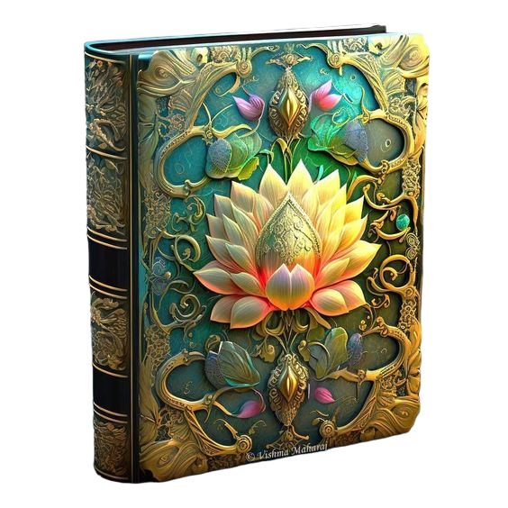
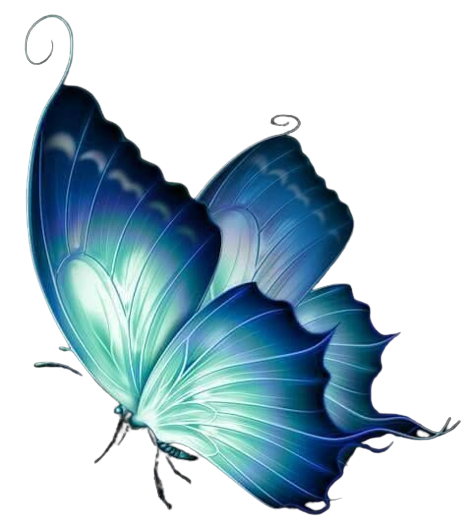
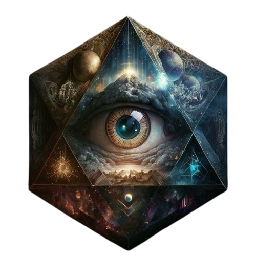
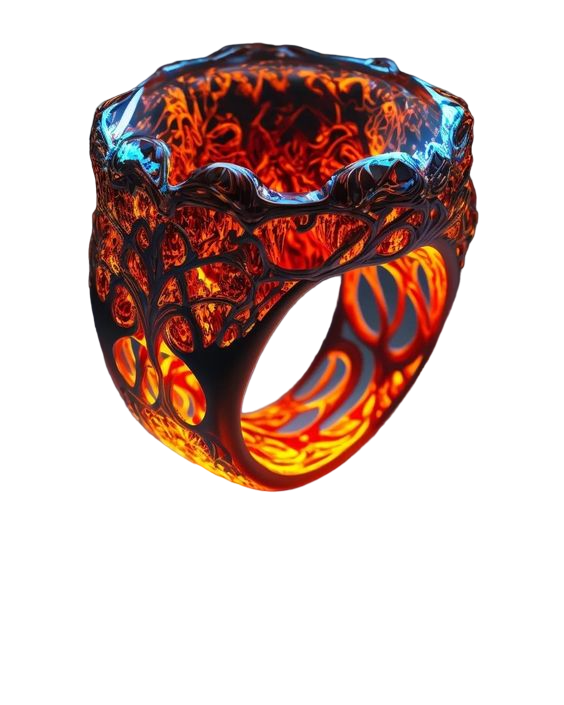
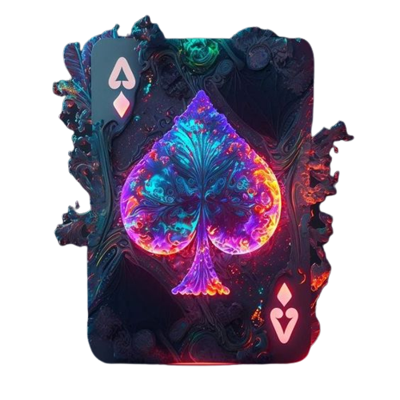

1° - O Cubo de Metatron
2°- A Coroa Negra

"Se você busca a conquista, eu sou aquela que há de te guiar. Com apenas uma palavra, o mundo é colocado de joelhos frente a ti."
- Dentre os artefatos, este foi aquele criado unicamente com o propósito de conquistar tudo. No momento em que alguém nasce, o indivíduo tende a desenvolver sua própria vontade. Algo que se torna impossível de impedir, pois é a base para a formação de pensamentos e opiniões próprias de cada um. Contudo, frente a coroa, nenhuma vontade se sobressai e nenhum pensamento divergente existe.
- Uma ordem da coroa, é uma ordem absoluta.
3°- O Olho do Mundo

"A onde quer que vá, eu estarei te observando. Não importa a localização, eu estou em todos os lugares. Apenas... não olhe para cima quando a lua se abrir."
- O artefato que faz tudo estar a um passo de distância. O outro lado do mundo ou a galáxia de Andrômeda possuem a mesma relevância de espaço quando se está na posse deste artefato. Se o universo se expande a cada segundo, o olho do mundo o faz retroceder.
- Cuidado com os dias de Lua cheia... e daquilo que pode sair de um buraco de minhocas.
4°- Relógio Atemporal

"O passado não pode ser desfeito, mesmo que seja capaz de mudar, os atos que um dia ocorreram continuam a existir na história. O Futuro é incerto, causando pavor se pensar demais nele. Sendo assim, o presente se torna a dádiva do tempo."
- A constante do tempo é imparável e imutável, assim como ocorre através da perspectiva de um observador. Mas, e se colocar o passado, presente e futuro sobre a perspectiva de um único indivíduo? O tempo se torna instável e sua alteração muda a forma como o mundo está agora.
- O tempo é uma constante. Altere o valor dessa constante e encare as consequências de suas próprias ações.
5°- Escudo de Planck

"A existência de algo cria forças. Essas forças criam a atração e a repulsão. Esses elementos fazem o mundo girar enquanto seus pés se mantém no chão. Por fim, todas as forças se anulam."
- Gravidade, Prótons, Elétrons, Quarks, Ligações iônicas e covalentes. Todos esses elementos em movimento giram em um ciclo de forças e de poder. Para que, no final, tudo seja anulado. Os vetores que coordenam o mundo fazem com que tudo gire. Protegendo a existência como um escudo. O sol negro que resplandece na face de um planeta azul.
- Os pequenos movimentos da lua(-), dançarão conforme a melodia do sol(+).
6° - Turibulo Cinza

"A imaginação humana é ilimitada. Se você pensa, logo existe."
- Forjado por puro capricho. O desejo é provido do sonho. E o sonho traz a imaginação. Um sonho nebuloso e esquecido se torna algo tão real quanto a vontade lhe permite. Use sua criatividade, pense e crie oque desejar.
- Olha... não queria falar nada não... mas você tem uma sorte horrível!
7°- O Rubi Escarlate

"Der Tod: Dê-me sua mão, bela e delicada forma! Sou amigo, e não venho para punir. Tenha bom ânimo! Eu não sou feroz, Tranquilamente você dormirá em meus braços!"
- Non videmus manicae quod in tergo est. ♈︎
Si quaeris essentiam vitae intelligere, primum debes cognoscere essentiam mortis et quid significat. ☦ Tangi, mutatus vel impedire non potest. Terrorem et metum natura sua facit, ignotum significat. Sed sine morte nulla existentia valeret.
- Não se atreva a brincar com o coração o qual não lhe pertence.
8°- Yggdrasil

"Der Leben: Sua delicadeza com aquilo que respira me traz uma sensação tão singela e bela. Os pequenos sentidos e a inocência deles traz para minha existência... um propósito."
- Olá! Você gostaria de aprender uma nova receita? Me diga, quais ingredientes colocaremos dessa vez? Nadadeiras? Carcaça? Presas? Não? Bem, temos uma variedade muito grande para trabalhar! Fique a vontade para escolher oque quer colocar! Duvido que crie algo mais estranho que um Ornitorrinco.
- O cuidado e a paciência geram os melhores frutos dentro de um epílogo.
9° - Borboleta Lunar

"Há de desejar o impossível? Há de acreditar em um sonho ou em uma mera fantasia? Se existe um refugio, onde a magia possa fluir, esse lugar é onde a lua eternamente está a brilhar."
- Magia não é somente uma mera crença ou algo provido do desconhecido. Aqueles que se denominam com "exploradores do universo" desprezam o conceito daquilo que é mágico, pois é dito como algo inacreditável ou inexplicável. Sendo tão caótico e imprevisível quanto o bater de asas de uma borboleta. Mas, a magia também pode ser considerada como... a ciência que os homens não são capazes de explicar.
- O bater de assas traz a vida provinda do brilho do luar... assim como um tornado.
10° - Laplace

"- Ki Ki Ki Ki... "
- Vejamos... oque vai ocorrer daqui a 200 anos? Olha só... Não pensei que isso fosse acontecer tão cedo... mais um reino caiu? Nossa, novo recorde mundial!... Putz! Eu gostava desse presidente... A bolsa de valores estourou de novo? Olha só, mais uma pandemia, não vejo uma desde a gripe espanhola... Inflação... Inflação... Inflação... A taxa de imposto subiu de novo... E LÁ VAI GUERRA CIVIL! KI KI KI KI!
- Você deve estar pensando que eu vejo o futuro, né? Bem, você está errado, não é bem assim. Mas meu nome é Laplace, prazer em conhecê-lo.
11° - Anel de Dante Alighieri

"Seu caminho moral é tão profundo e forte quanto uma folha de seda."
- Me responda uma coisa, os humanos, eles tem uma moral definida ao nascer ou isso é criado com o passar do tempo? Isso serve como um limitador, ou como um caminho a ser seguido? Bem... Muitos dizem que isso é algo imutável e definido.
- Aquilo que você define como "Bom", é tão distânte do "mal" quanto os dois lados de uma moeda.
12°- O Baralho Infinito
